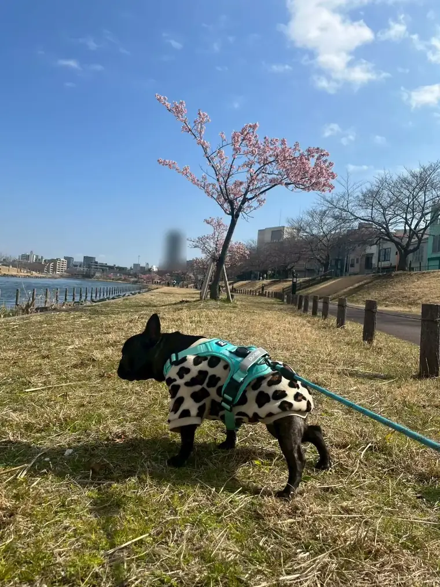
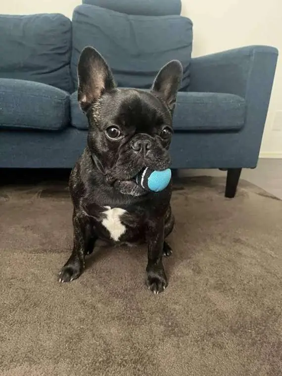

愛犬とランニング。
フレブルは走っていいの？
いっしょに走る前に、知っておきたいこと ・ 2026年11月

こまより
わたし、おいかけっこは大好き！でも「パパといっしょにジョギング」となると、ちょっと話はべつ。フレブルは、鼻がみじかくて息が苦しくなりやすいから、長く走るのはにがてなんだ。いっしょに走る前に、知っておいてほしいことをまとめたよ。
いっしょに走ると、いいこと
- わんちゃんの体に。ちょうどいい体重を保ちやすくなり、筋肉や心臓・肺のはたらきも育ちます。運動不足からくる困りごと（太りすぎ、ストレス、いたずら）もやわらぎます。
- 飼い主の体と心に。「待ってる子がいる」と思うと、運動が続きやすくなります。体力づくりや体重管理、気分転換にも。
- ふたりの関係に。同じペースで動く時間は、信頼やコミュニケーションを深めてくれます。
でも、フレブルは「長く走る」に向かない
獣医の情報でも、フレンチブルドッグやパグなど鼻の短い犬種（短頭種）は、ランニングの相手には向かないとされています。顔の形のせいで呼吸がしにくく、体の熱もうまく逃がせないため、とくに暖かい季節は熱中症の危険が高まります。
さらにフレブルは、背骨のクッション（椎間板）をいためやすい犬種のひとつ。かたい路面をくり返し走る動きは、背中や足腰の負担にもなります。
年齢にも注意：体ができあがる前の子犬や若い犬は、長い距離のランニングで骨の成長部分（成長板）をいためることがあります。多くの犬種で、1歳半（18か月）ごろまでは長く走らせないのが目安。始める前に動物病院で相談を。
フレブルに、ちょうどいい「走り方」
走るのがだめ、というわけではありません。「短く・すずしく・休み多め」なら、フレブルも走る楽しさを味わえます。
- 短いダッシュ遊びを、数回だけ。おいかけっこやボール遊びで、数十メートル走ったら、ひと休み。こまはこれが大好き。
- 長さは「歩く」でかせぐ。体力づくりは、ゆっくり長めのおさんぽで。においかぎの時間も、立派な運動です。
- 雨や暑い日は、おうちで。ひっぱりっこやボール遊びなど、室内でできる運動は「動きたい、を満たしてあげる」にまとめています。

ちょっとだけダッシュ。
もし、いっしょに走るなら
体の大きな犬種や、体力のある子と走るときも、基本は同じです。フレブルなら、なおさら慎重に。
- まずは動物病院でチェック。体の状態や、走っていいかを確認してから。
- ふだんのおさんぽから始める。はじめは「1分走って、2分歩く」をくり返すくらいから。数週間かけて、少しずつ走る時間をのばします。
- 増やすのは、ゆっくり。距離は、2週間に1〜2割ずつまでが目安。歩くだけの休みの日もつくって。
- ペースは、わんちゃんに合わせる。ついてくるのがやっとなら、すぐに歩きにもどして。
- 暑い時間はさける。すずしい朝や夕方に。フレブルは、暑い季節は走らないくらいでちょうどいい（夏の暑さ・熱中症対策）。
- やさしい路面を選ぶ。アスファルトやコンクリートは関節にかたく、夏は肉球のやけどの原因にも。土や芝生がおすすめ。
- お水と、肉球チェック。こまめに水を飲ませて、帰ったら肉球に傷やすりむけがないか見てあげて。
- 人の痛み止めは、ぜったいに飲ませない。人用の鎮痛薬は、犬には毒になるものがあります。
すぐに走るのをやめるサイン
- ついてこない・立ち止まる・すわりこむ
- ハアハアが激しく、なかなかおさまらない／ゼーゼーと苦しそうな音がする
- 舌や歯ぐきが真っ赤、または紫っぽい／よだれが多い
- ふらつく・足をひきずる
こんなときは、すぐにすずしい日かげで休ませて、お水を。ぐったりしている、呼吸が落ちつかないときは、迷わず動物病院へ。
だいじなおやくそく。この記事は一般的な情報です。わんちゃんの体や性格はそれぞれちがうので、気になることは、かかりつけの動物病院に相談してね。